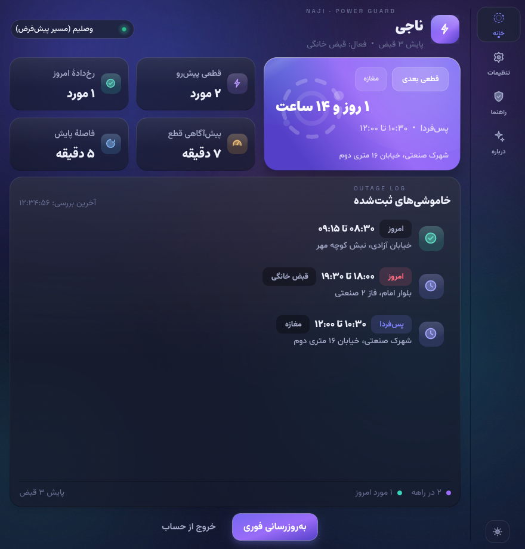
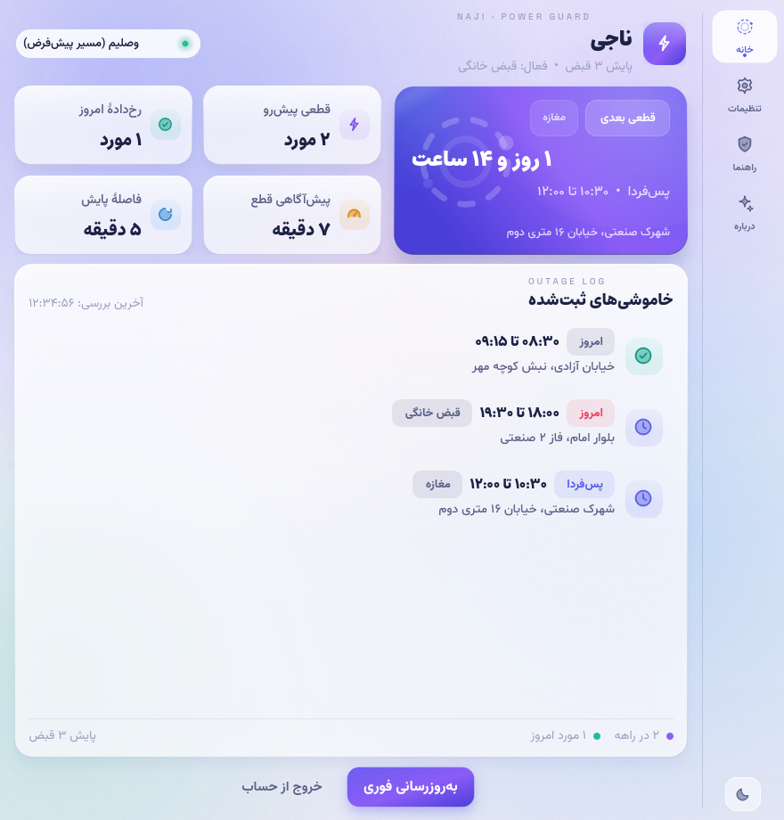
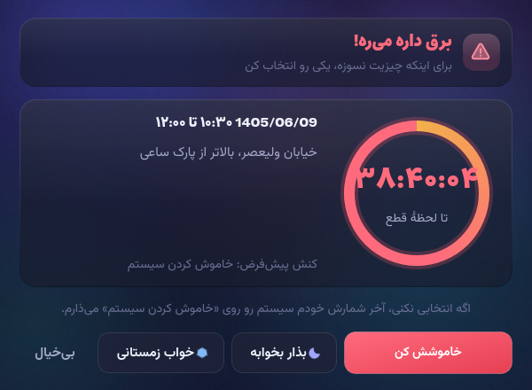
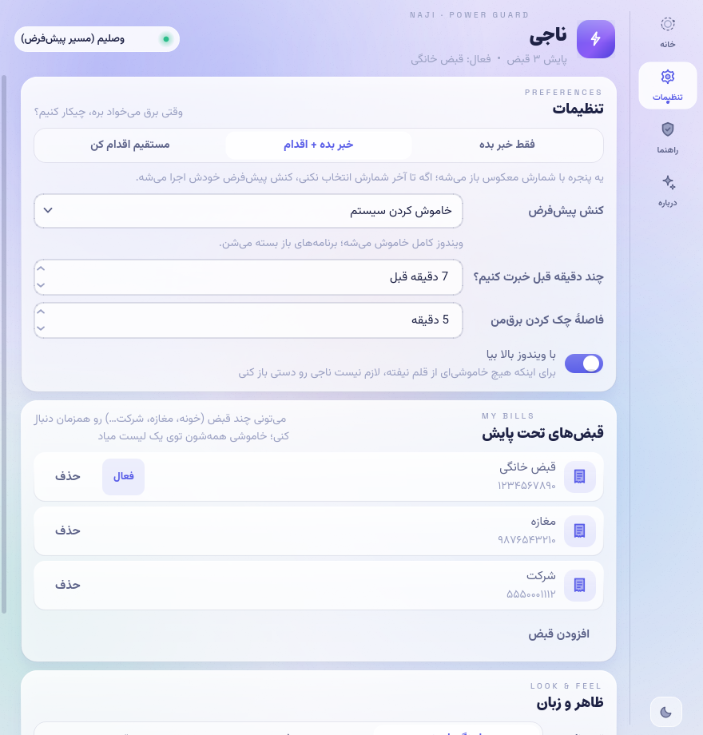
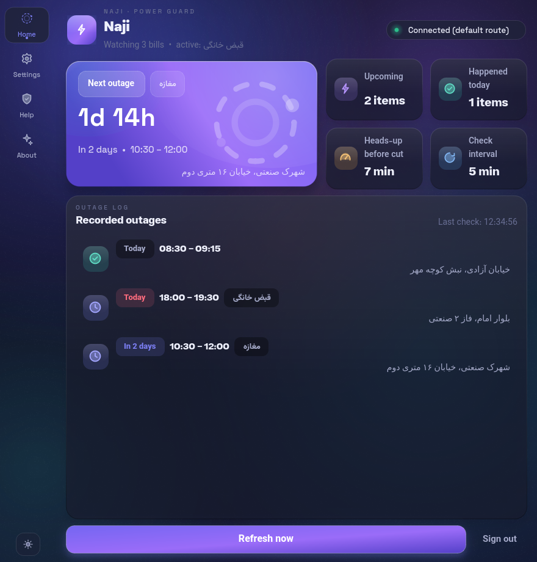

ناجی خاموشیهای محلهی شما را از سرویس رسمی «برقمن» میخواند، چند دقیقه قبل از هر قطعی با اعلان و صدا خبرتان میکند — و اگر سر کار یا خواب باشید، خودش سیستم را خاموش، خواب یا خوابزمستانی میکند تا دادهها و سختافزارتان سالم بمانند.
ویندوز ۱۰ و ۱۱ · نصاب فارسی · زیر ۲۰ مگابایت

همهی چیزهایی که ناجی را از یک «چکر خاموشی» ساده متمایز میکند.
هر ۲۰ ثانیه زمانِ قطعیها با ساعت سیستم سنجیده میشود؛ دقیقاً همانقدر که تنظیم کردهاید زودتر، با اعلان + صدا خبرتان میکند.
خاموش کردن، خواب یا خوابزمستانی — به انتخاب شما. اگر جواب ندهید، پنجرهی هشدار خودش اقدام پیشفرض را اجرا میکند.
خانه، مغازه و شرکت را با هم زیر پایش بگیرید؛ خاموشی همه در یک لیست با تبِ جدا برای هر قبض.
چند وقت است قطعی دارید و هر بار چقدر طول کشیده؟ آمار ۷ و ۳۰ روزه با نمودار مرتب.
شمارش معکوس تا قطعی بعدی، همیشه گوشهی دسکتاپ — بدون باز کردن پنجرهی برنامه.
رابط کاملاً راستچین با فونتهای وزیرمتن و استعداد؛ با یک کلیک انگلیسیِ چپچین میشود.
تم تیره و روشن، هشدارِ خوانا و تنظیماتِ ساده — همه در خدمت «سر وقت خبردار شدن».




ناجی دادهاش را از سرویس رسمی «برقمن» میخواند؛ ورود با همان شمارهای که آنجا دارید. شماره فقط برای همین است — هیچ سرور ابری دیگری در کار نیست.
برق خانه، مغازه یا هرجای دیگر — حتی چند قبض با هم. از این بعد هر خاموشیِ ثبتشده در برقمن، همینجا میآید.
ناجی در تری مینشیند، مراقب است، سر وقت خبر میدهد و اگر نباشید، سیستم را خودش میخواباند یا خاموش میکند.
بله، کاملاً رایگان و متنباز. دادهها فقط از حساب خودتان در برقمن خوانده میشود.
سرور برقمن IP خارج از ایران را میبندد؛ ناجی خودش این را تشخیص میدهد و راهنمایی میکند که برای saapa.ir قانون Direct بگذارید یا موقتاً VPN را خاموش کنید.
هشدار چند دقیقه قبل میآید تا خودتان ذخیره کنید؛ اگر جواب ندادید، بسته به تنظیمات، ناجی در ثانیههای آخر سیستم را خواب یا خاموش میکند — خاموشیِ تمیز، بدون فایل خراب.
حدود ۱۰۰ مگابایت رم؛ انیمیشنها روی ۲۴fps محدود شدهاند تا از پردازنده و باتری لپتاپ صرفهجویی شود.
دانلود کنید، وارد شوید، بقیهاش با ناجی.
دانلود آخرین نسخه از GitHub Releases